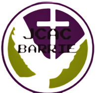
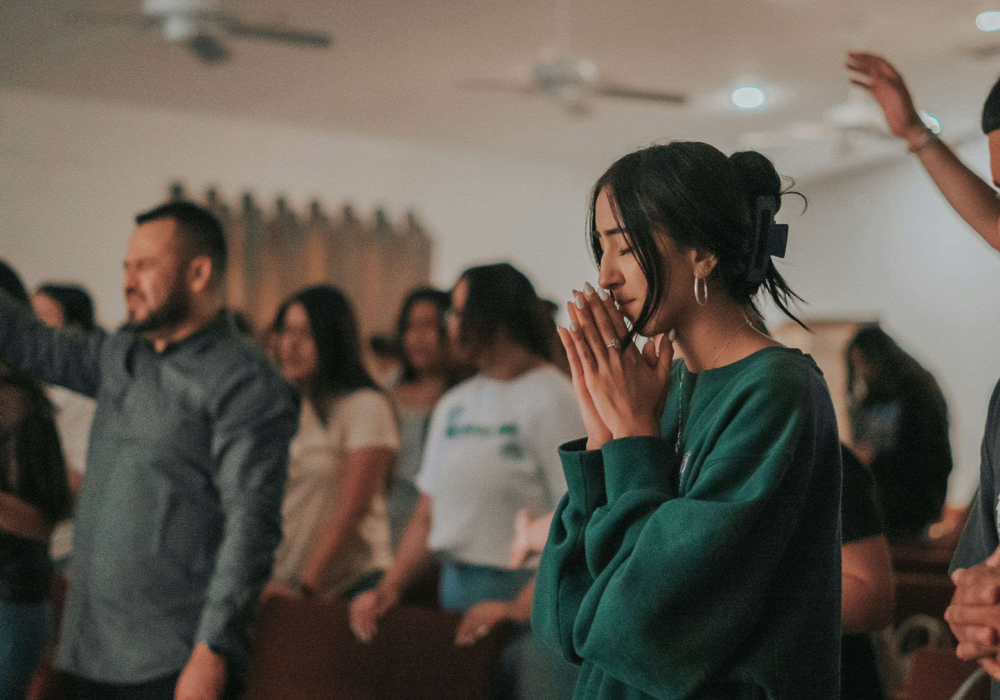

WATCH LIVE
Every Sunday Service Livestream
Join the JCAC Barrie congregation online for Sunday worship and teaching.
Read the update
JCAC BarrieJESUS CHRIST ANOINTED CHURCHLatest from Jesus Christ Anointed Church.
Join the JCAC Barrie congregation online for Sunday worship and teaching.
Read the update
A reflection on the security of the life hid with Christ in God, as brought out in the Epistles.
Read the articleJoin us in person in Barrie or watch online.